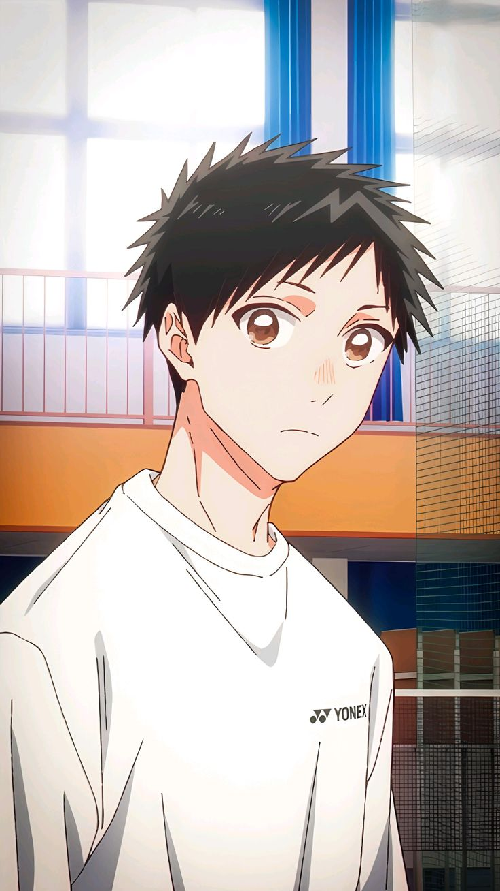
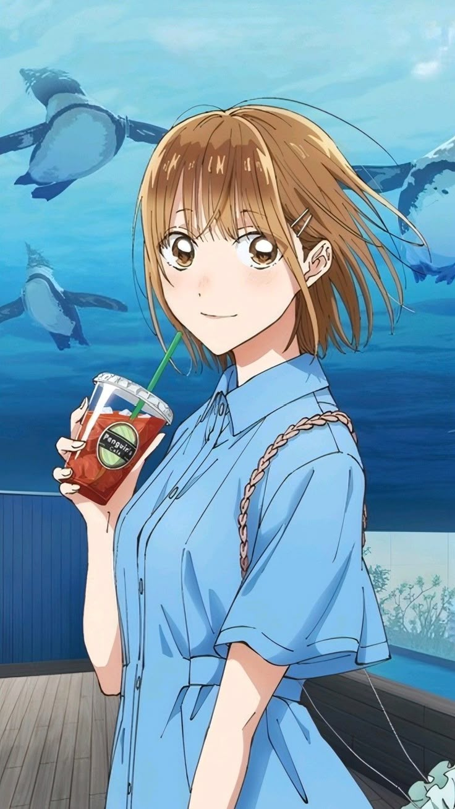
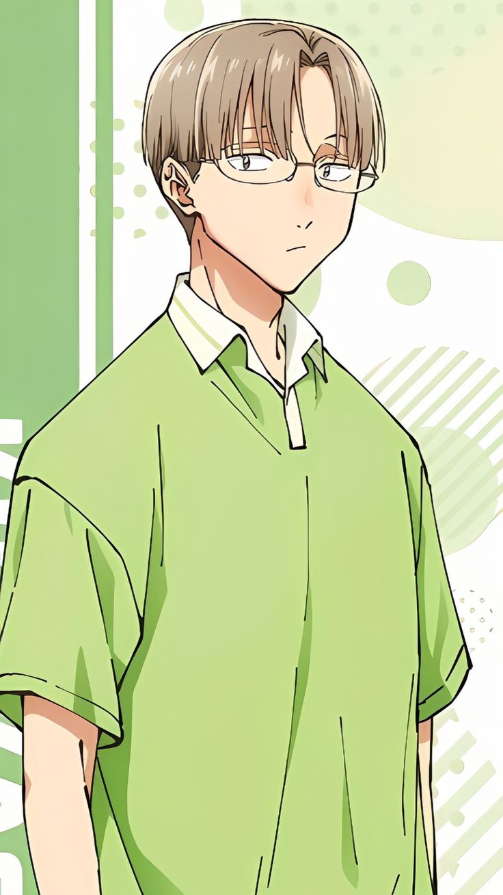
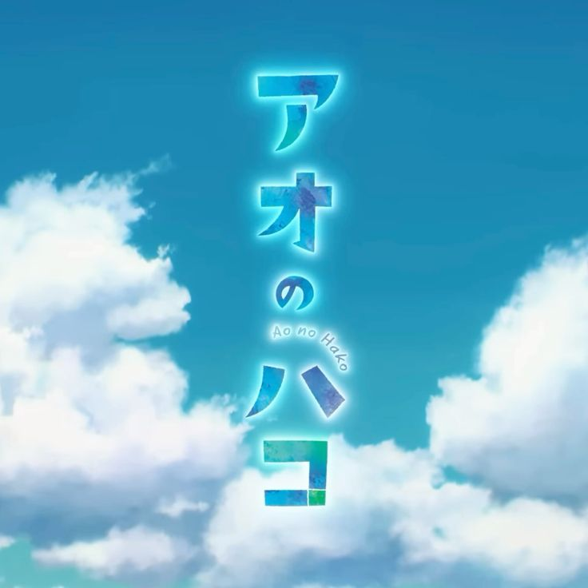

From April 12, 2021 | Ongoing | 175+ Chapters | Anime: October 2024
Blue Box (青の箱, Ao no Hako) is a Japanese manga series written and illustrated by Kouji Miura. Serialized in Weekly Shōnen Jump since April 12, 2021, the story follows Taiki Inomata, a badminton club member who falls in love with Chinatsu Kano, a basketball ace from his school.
By a twist of fate, Chinatsu moves into Taiki's house as a lodger, turning his everyday life into a beautiful, nerve-wracking adventure of feelings left unsaid and dreams chased with full heart.




Determined badminton player with big dreams, deeply in love with Chinatsu who moved into his house.
Full ProfileTalent basketball player admired by everyone, cool on the outside but warm within, and Taiki's new housemate.
Full ProfileTaiki's energetic little sister who adores Chinatsu and is the mood-maker of the house.
Full ProfileTaiki's reliable best friend and badminton teammate, supportive and perceptive of emotions.
Full ProfileTaiki meets Chinatsu and falls deeply in love. Chinatsu becomes his housemate after a family situation.
Both pursue their athletic dreams. Tournaments and trials intensify their feelings.
The long-awaited confession happens. Hearts speak, new chapters begin.